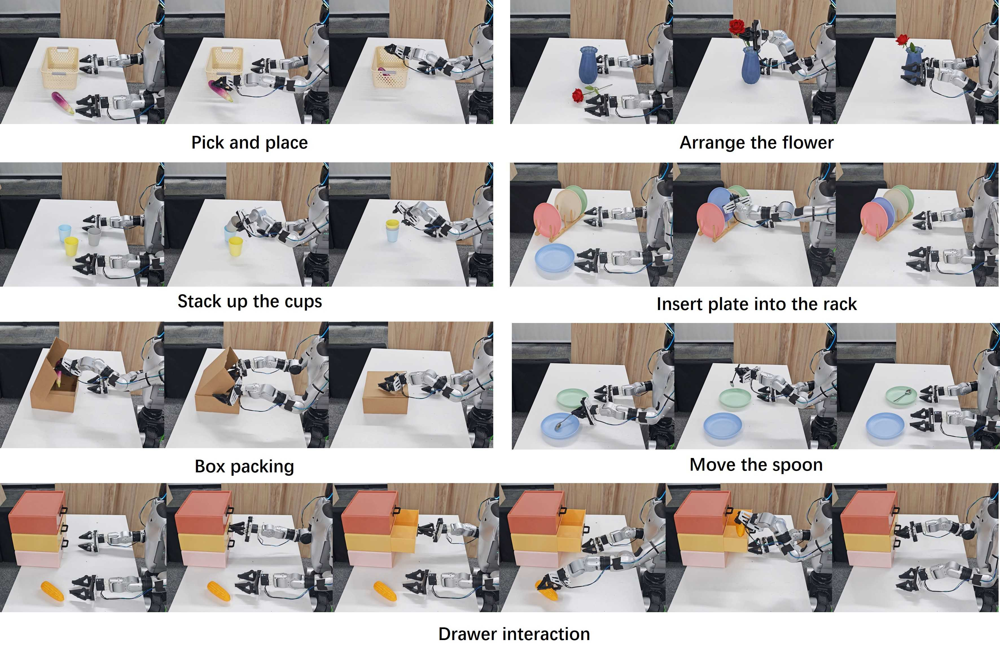
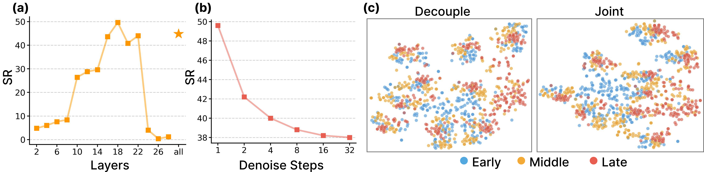

Abstract
Vision-Language-Action (VLA) models have demonstrated strong potential in robotic manipulation, but their scaling is inherently bottlenecked by the scarcity of costly action supervision. Meanwhile, generative video models naturally encode rich spatiotemporal physics, yet existing robotic applications typically rely on slow, multi-stage pipelines that fail to fully exploit intermediate generative representations for end-to-end control. To bridge this gap, we present DiT4DiT, an end-to-end Video-Action Model that unifies a video Diffusion Transformer (DiT) and an action DiT within a cohesive cascaded architecture. Instead of relying on fully reconstructed future frames, our video branch models future dynamics while extracting intermediate denoising activations as stable, temporally grounded conditions for action prediction. To train both branches coherently, we introduce a dual flow-matching objective featuring decoupled timesteps and noise scales. This asymmetric design allows the framework to flexibly learn the full generative video trajectory while simultaneously performing efficient generative inverse dynamics. Extensive experiments on both the simulated and real-world environments validate our approach. DiT4DiT attains state-of-the-art performance on the LIBERO and RoboCasa GR1 simulation benchmarks, achieving average success rates of 98.6% and 50.8%, respectively, while also delivering superior results in real-world tasks on the Unitree G1 robot. These results demonstrate that substituting static image-text priors with the implicit physical dynamics of a generative video process significantly enhances sample efficiency, convergence speed, and downstream success rates, establishing video generation as a vastly superior scaling proxy for policy learning.
Overview of DiT4DiT

DiT4DiT is an end-to-end Video-Action Model with a cascaded dual-DiT architecture. (a) The Video DiT (initialized from Cosmos-Predict2.5-2B) takes the current observation frames and a language goal, encodes them via a causal video VAE into latent space, and models future visual dynamics via flow matching. A forward hook mechanism intercepts intermediate hidden activations at a fixed flow timestep from a specific transformer layer, converting the generative process into rich, physics-aware visual tokens — without requiring full video reconstruction. (b) The Action DiT takes the extracted visual tokens via cross-attention, along with proprioceptive state embeddings and noisy action trajectories, and predicts a velocity field to generate precise robot action trajectories. (c) A dual flow-matching objective with a tri-timestep scheme jointly optimizes both branches end-to-end, allowing the video branch to learn the full generative trajectory while the action branch performs efficient generative inverse dynamics.
Why Video Generation?
We provide empirical evidence that video generation is a vastly superior, data-efficient unsupervised training objective compared to semantic grounding or VLM-centric latent modeling. Our study compares three proxy objectives: semantic grounding, FLARE-style latent prediction, and video generation. Video generation achieves up to 10× higher data efficiency and 7× faster convergence.

Simulation Results
DiT4DiT achieves state-of-the-art performance on two challenging simulation benchmarks.
LIBERO Benchmark
DiT4DiT achieves 98.6% average success rate across four LIBERO suites, surpassing all baselines including π0.5 (96.9%), CogVLA (97.4%), and OpenVLA-OFT (97.1%). Particularly strong on LIBERO-Long (extended horizon): 97.6%.
| Method | LIBERO-Spatial | LIBERO-Object | LIBERO-Goal | LIBERO-Long | Average |
|---|---|---|---|---|---|
| OpenVLA | 84.7 | 88.4 | 79.2 | 53.7 | 76.5 |
| CogACT | 92.5 | 92.7 | 91.3 | 74.7 | 87.8 |
| OpenVLA-OFT | 97.8 | 97.8 | 98.0 | 94.8 | 97.1 |
| π0.5 | 98.0 | 98.4 | 96.0 | 95.2 | 96.9 |
| CogVLA | 98.4 | 99.6 | 97.6 | 93.6 | 97.4 |
| Qwen3DiT | 97.0 | 97.2 | 97.8 | 94.2 | 96.6 |
| DiT4DiT (Ours) | 99.2 | 99.2 | 98.4 | 97.6 | 98.6 |
RoboCasa-GR1 Benchmark
DiT4DiT achieves 50.8% average success rate across 24 tasks, surpassing GR00T-N1.5 (41.8%) by 9.0 points and GR00T-N1.6 (40.8%) by 10.0 points. Outperforms Qwen3DiT (36.2%) by 14.6% absolute, confirming that video-generative priors are vastly superior to static VLM priors.
Real-World Experiments
We evaluate DiT4DiT on seven household tasks with the Unitree G1 humanoid robot: pick-and-place, arrange flower, stack cups, insert plate, box packaging, move spoon, and drawer interaction. DiT4DiT comprehensively outperforms both GR00T-N1.5 (pre-trained with more data) and Qwen3DiT across all tasks.

Real-World Task Demonstrations
Zero-Shot Generalization
DiT4DiT demonstrates strong zero-shot generalization under severe distribution shifts in both simulation and real-world settings.
Simulation Generalization
In RoboCasa object-substitution tests, DiT4DiT achieves 54.5% on unseen objects vs. 32.0% for Qwen3DiT.
Real-World Generalization
Tested on category changes (unseen cups/vases), object substitution (corn instead of eggplant), and quantity variation (4 cups instead of 3). DiT4DiT achieves 70% on Arrange Flower (Category) vs. 0% for Qwen3DiT and 10% for GR00T-N1.5.

Generated Video Plans
DiT4DiT can optionally generate full video plans showing predicted future dynamics. The video branch produces realistic visual plans that demonstrate the model's understanding of physical dynamics and task-relevant behaviors.

Ablation Studies
We conduct thorough ablation studies to validate each design choice in DiT4DiT.

(a) Feature extraction layer: Layer 18 (out of 28) is optimal; early layers lack actionable semantics, final layers over-specialize for pixel reconstruction. (b) Denoising steps: A single forward step yields the best results; more steps degrade performance by over-committing to pixel-level reconstruction details. (c) Joint vs. decoupled training: t-SNE visualization shows joint training produces smooth, structured temporal trajectories in the latent space, while decoupled training produces fragmented, entangled distributions.
Model Efficiency
| Model | Trainable Params | Deployment Freq. |
|---|---|---|
| GR00T-N1.5 | 2.7B | 13 Hz |
| Qwen3DiT | 2.3B | 9 Hz |
| DiT4DiT (Ours) | 2.2B | 6 Hz |
DiT4DiT is the most parameter-efficient model. While the 6 Hz deployment frequency is lower than alternatives, it is sufficient for real-time closed-loop control, and the superior action quality more than compensates for the lower frequency.
BibTeX
@article{ma2025dit4dit,
title={DiT4DiT: Unleashing the Potential of Video Generation for Generalizable Robot Control},
author={Ma, Teli and Zheng, Jia and Wang, Zifan and Gao, Ziyao and Zhou, Jiaming and Liang,
Junwei},
journal={arXiv preprint arXiv:XXXX.XXXXX},
year={2025}
}